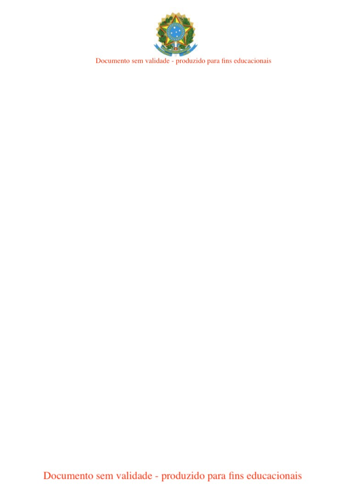

JUSTIÇA ELEITORAL
TRIBUNAL SUPERIOR ELEITORAL
Certidão
Certifico que, de acordo com os assentamentos do Cadastro Eleitoral e com o que
dispõe a Res.-TSE nº 21.823/2004, o(a) eleitor(a) abaixo qualificado(a) está quite com a
Justiça Eleitoral na presente data .
Nome Civil:
$NOME$
Inscrição:
$TITULO$
Zona: $ZONA$
Seção: $SEC$
Município:
00000 - $CIDADE$
UF: $UF$
Data de Nascimento:
$NASC$
Domicílio desde: $DATA_DOMILICIO$
Filiação: $MAE$
$PAI$
Certidão emitida às $HORA$ de $DATA$
Res.-TSE nº 21.823/2004:
O conceito de quitação eleitoral reúne a plenitude do gozo dos direitos políticos, o regular exercício do voto,
salvo quando facultativo, o atendimento a convocações da Justiça Eleitoral para auxiliar os trabalhos
relativos ao pleito, a inexistência de multas aplicadas, em caráter definitivo, pela Justiça eleitoral e não
remitidas, excetuadas as anistias legais, e a regular prestação de contas de campanha eleitoral, quando se
tratar de candidatos.
A plenitude do gozo de direitos políticos decorre da inocorrência de perda de nacionalidade; cancelamento
de naturalização por sentença transitada em julgado; interdição por incapacidade civil absoluta;
condenação criminal transitada em julgado, enquanto durarem seus efeitos; recusa de cumprir obrigação a
todos imposta ou prestação alternativa; condenação por improbidade administrativa; conscrição; e opção,
em Portugal, pelo estatuto da igualdade.
Esta certidão de quitação eleitoral é expedida gratuitamente.
Sua autenticidade NÃO poderá ser confirmada na página do Tribunal Superior Eleitoral
meio do código:
0AAA.0AAA.AA0A.AAAA